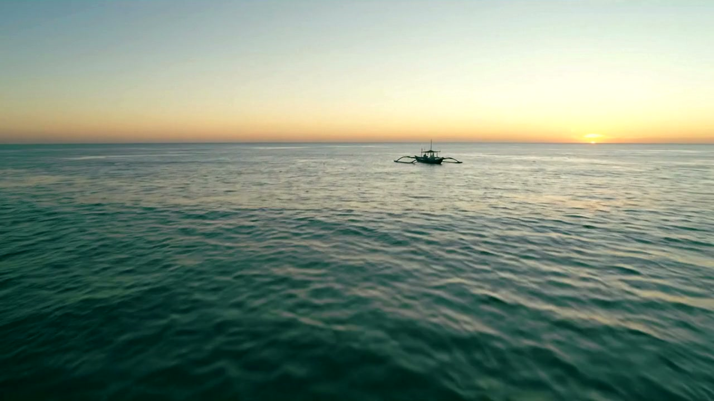

ÉTAPE 01
Le satellite mesure
Chlorophylle, température de surface, vent. Trois mesures publiques, prises au-dessus de votre zone de sortie.
Est-ce que je sors aujourd'hui ?
À 705 kilomètres, un satellite lit la couleur de votre mer.
Le vent dit si vous rentrerez.
PARTEZ, ATTENDEZ ou ÉVITEZ. Par SMS, sur le téléphone que vous avez déjà.
Le satellite lit la mer chaque matin. Votre téléphone reçoit la réponse : PARTEZ, ATTENDEZ ou ÉVITEZ.
Le carburant d'une sortie à la journée pèse entre 37 000 et 90 000 F CFA, soit plus des deux tiers du coût de la sortie. Beaucoup de pêcheurs empruntent pour remplir le réservoir. Une sortie vide n'est donc pas une mauvaise journée. C'est une dette.
Et il y a le vent. En juillet 2026, deux pirogues ont chaviré en une semaine à Grand-Lahou. Personne ne prend la mer en espérant que le vent se lève.
Sources : Atlas des pêches artisanales d'Afrique de l'Ouest (IRD), France 24 (2024), Afrikmag (2026).
Chlorophylle, température de surface, vent. Trois mesures publiques, prises au-dessus de votre zone de sortie.
Un indice de 0 à 100 croise la richesse de l'eau et le danger du vent. Le vent fort l'emporte toujours sur le poisson.
Un message de 160 caractères sur un téléphone simple. Pas d'application, pas de forfait internet.
C'est exactement ce que le service fait chaque matin, pour chaque pêcheur inscrit.
Score 78 sur 100. Eau productive, mer calme.
Relâchez et la sonde redescend.
Sous une couverture nuageuse, il n'y a pas de mesure exploitable. Le service affiche DONNÉES INDISPONIBLES et demande de réessayer le lendemain. Il n'invente pas un chiffre.
Un pêcheur qui découvre une fois qu'on lui a menti n'ouvrira plus jamais le message. C'est pour cela que le silence fait partie du service.

Pendant le pilote, l'accès est gratuit pour les coopératives retenues. L'État et les ONG financent cette phase pour la flotte artisanale. La facturation viendra ensuite, et elle sera annoncée avant, jamais après.
Tarif annoncé à la fin du pilote.
Nous ouvrons le pilote coopérative par coopérative. Laissez votre zone et votre contact, la réponse arrive sous 48 heures.